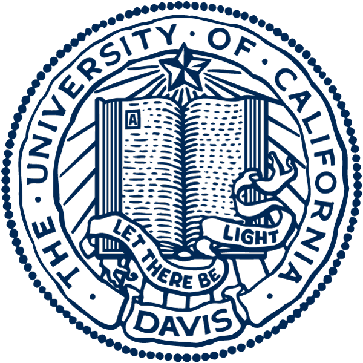
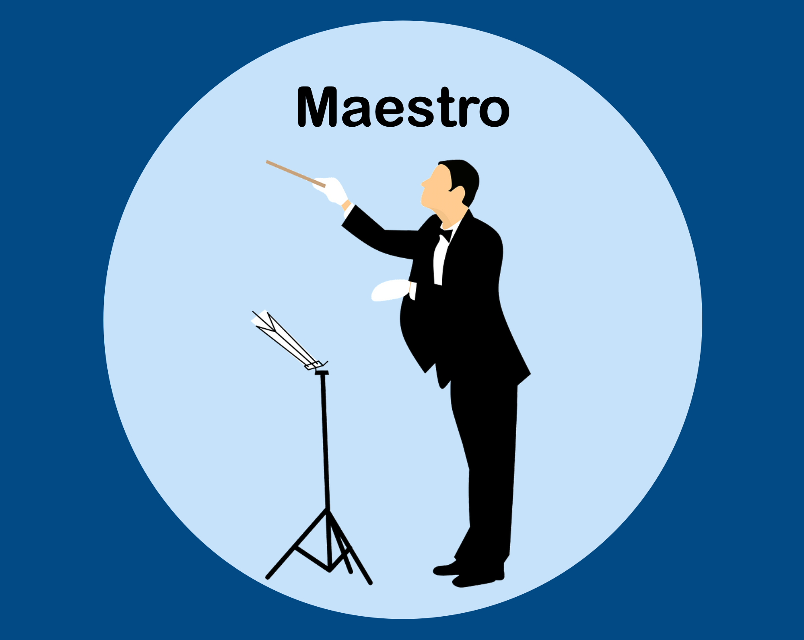
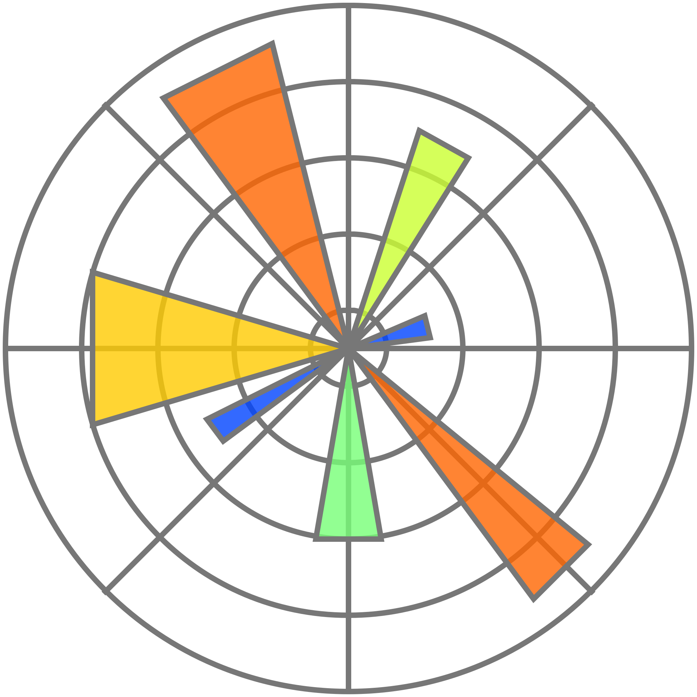
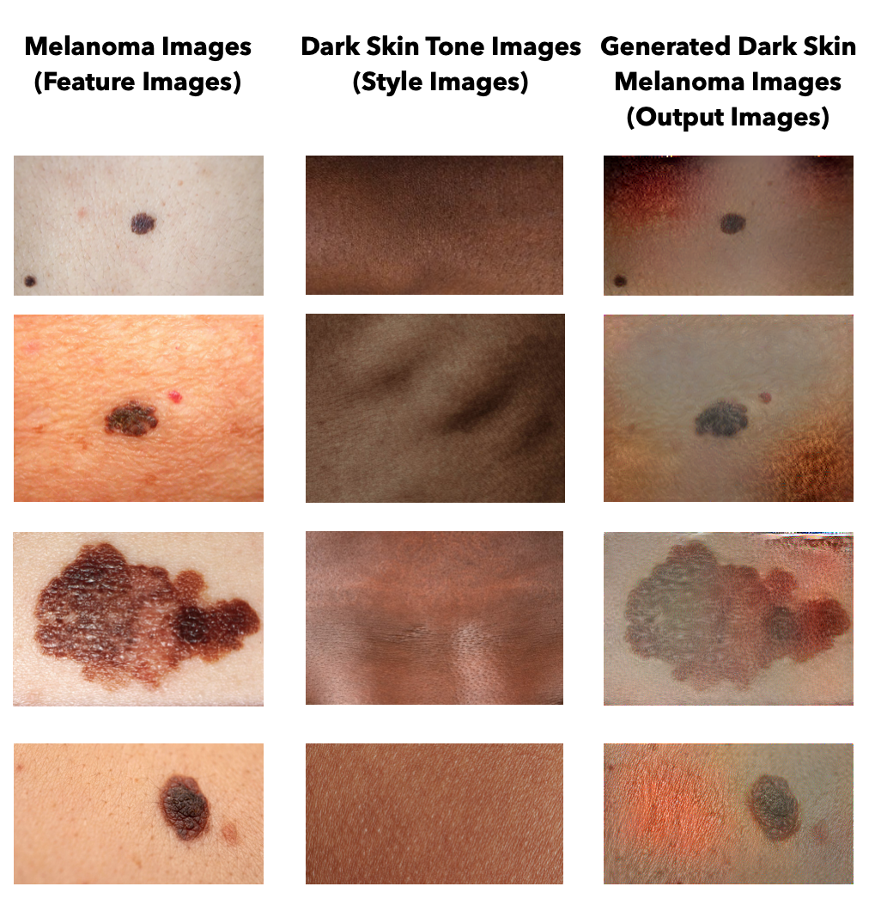

I am a senior at Brown University (Class of 2023) pursuing a Bachelor of Science in
Computational Biology with an emphasis on software engineering, deep learning, and molecular biology.
I enjoy the interdisciplinary work within computational biology because it allows me to combine computer science,
applied math, and genetic engineering to create novel algorithms and software solutions. I am interested in
leveraging my experience in biomedical research and computer science to pursue a career at the intersection of
technology, science, and entrepreneurship.
"Look where want to go and you will eventually get there." - Surfer
Work Experience
Insitro (Biotech): Software Engineering and Computational Imaging Intern
Developed computational imaging and microcopy pipelines for live cell imaging and machine learning
applications
Optimized the differential phase contrast reconstruction algorithm using multi-threading, batching, Jax,
and Ray.
Brown University: Undergraduate Teaching Assistant Program
Developed technical workshops, course material, and homework. Held weekly office hours and graded exams.
Computational Linguistics: CSCI 1460
Overhauled and redeveloped new course material and projects for CS1460 from
scratch.
Taught natural-language processing algorithms such as word embeddings, machine translation, recurrent
neural networks, sequence-to-sequence models, hidden Markov models, and generative adversarial networks.
Computer Vision: CSCI 1470
Improved course material and taught computer vision algorithms such as image filtering,
feature detection/extraction, 3D image reconstruction, RANSAC, and convolutional neural networks (CNN).
Introduction to Engineering: ENGN 0030
Mentored students in human-centered design and technical machine proficiency.
Harvard Medical School: Neuroscience Machine Learning Intern
Implemented a deep learning project analyzing correlations between neurological activity and movement in rats.
Developed a TensorFlow deep learning model to construct a CNN to identify unmarked 3D rat joints using spatial and
temporal data. Created a variational autoencoder to predict coordinates of missing joints in raw video feed.

UC Davis Medical Center: Neuroscience Machine Learning Intern
Optimized methods to efficiency grow Covid vaccines, thereby reducing laboratory resources and time by 450%.
Determined antibody generation efficacy of adenovirus vector vaccines by designing plasmids, growing cell
lines, operating flow cytometry, and performing ELISA tests on Covid infected rhesus-macaque blood samples.
Pointz: Full Stack Developer
Managed database architecture, designed login functionality, implemented the ability to create points of interest
along bike routes, and incorporated APIs to generate map and routing capabilities to find the safest bike route.
RESEARCH
Center for Computational Molecular Biology: Deep Learning Research Assistant
Undergraduate researcher in Professor Ritambhara Singh's Lab applying deep learning algorithms, such as
autoencoders, to better understand the effects of gene expression in single cell RNA sequencing.
Brown University Medical School: Artificial Intelligence Radiology Lab Assistant
Awarded an UTRA grant to develop a deep learning program using natural language processing and computer vision
to predict Covid mortality rate in the ICU by analyzing physician free text and MRI datasets from hospitals.
TECHNICAL PROJECTS

TECHNICAL SKILLS
python
java
javaScript
MATLAB
AWS
docker
SQL
React
NodeJS
django
CSS
HTML
Figma
SQLite
git
TensorFlow
Keras
PyTorch
NumPy
pandas
matplotlib
JAX
Ray
OpenCV
scikit-learn
spacy
bokeh
Debiasing Melanoma Images
Developed a deep learning computer vision program that generates melanoma images for people with darker skin tones with
the goal of debiasing medical data.
Melanoma, a form of skin cancer that arises from melanocytes, forms 75% of skin cancer-related deaths in the US (Davis et al., 2019).
Nevertheless, early diagnosis and classification of melanomas require clinical, dermoscopic, and molecular data and have challenges due to skin
pigmentation differences in the patients, making it a growing field in Dermatology (Darmawan et al., 2019). According to Wolf et al (2013),
machine learning models that are designed to tackle the melanoma detection problem remain highly inaccurate and yield approximately 30%
incorrect predictions (Darmawan et al., 2019; Wolf et al., 2013). This has been causing inaccurate results, false trust in patients in cancer
detection software, and even delayed melanoma detection (Wolf et al., 2013).
The use of deep learning models, such as convolutional neural networks, is found to be more accurate in identifying such cancers.
However, since the melanoma prevalence in Caucasian backgrounds is at least 50% greater, the majority of these deep learning models are trained
on data that is skewed toward lighter-skinned images (Raimondi, Suppa & Gandini, 2020). This underrepresentation in the machine learning models
is causing high biased outcomes, which are unable to classify melanoma patients that have darker skin tones. (Guo et al., 2021).
Thus, I sought to utilize deep learning to correct deep learning model biases. By using a style transfer model architecture using
convolutional neural networks (CNNs), I was able to combine databases of patients with darker skin and skin lesions from lighter-skinned
patients to produce skin lesion images in pigmented skin that could be used for future deep learning model training to improve skin cancer
detection in ethnic skin.
Result

Maestro
Utilized a convolutional neural network to identify hand gestures and correlate it with music controls (ie. pause, resume, skip, reverse, etc.) with 99.58% recognition accuracy.
I wanted to create a gesture control system where different hand positions can activate different commands on a
computer. I created a Convolutional Neural Network to recognize how many fingers (from 0 to 5) a right-hand holds up and maps
the gestures to commands on a music playlist. This gesture recognition system allows for a different approach to controlling
interfaces, increasing accessibility.
I wanted accurate recognition of input images so I tried to create a convolutional neural network for the task.
I believe that introducing machine learning into the task would greatly benefit accuracy. Human hands are very complex because
they can bend into various shapes and look different from different angles. This makes recognition difficult as different
gestures may have similar contours. Nonetheless, I believe that remote control through hand gestures would offer an alternate
approach to controlling interfaces, increasing accessibility for different groups of people. For those who may have disabilities
or difficulties understanding or accessing traditional buttons, having an accurate and easily learned hand-gesture control would improve accessibility.
Preprocess input data to look like training data
Results
Yoki
Developed a website that pairs registered users from a unique organization based on similar interests using a KD tree
data structure to find the optimal compatibility between people.
Complex algorithm
We used a KDTree for the complex algorithm, in which each point in the tree represents a user's array of interest levels.
Furthermore, we used the KDTree to create a sorted ArrayList of users with a special heuristic comparator our team designed. The heuristic comparator
takes two users' interest level arrays and compares their values of the same interest categories one by one. We designed it so that the smaller the gap
between two users' levels of interest, the higher their sorting priority. With this, we were able to create a list of "best" matches between a user and
other users based on similar interests.
Since the KDTree's main purpose is to provide the best structure for quicker sorting on a fixed dataset, we programmed the KDTree so that it
is rebuilt every time a user updates their interest or when a new user is added to the database. This is because the KDTree is created based on comparing
an individual's interests for each depth/level in the tree. Changing a user's interests gives the user new "coordinates", thus the KDTree will no longer
be the most efficient for the nearest neighbor searched. Thus, we reconstruct the tree every time a user's interest levels are modified. In addition, when a
user does not specify their level of interest in a particular interest category, its default value will be 0.
Encryption
To ensure the safety and privacy protection of all of our users, we decided to implement encryption for user logs in and signs ups. We included a
password encryption algorithm between the frontend and backend, as well as between the backend and database. This way, no outsiders can access the real value of
the user's password when the different parts of our project communicate with one another. To create extra security, we made sure that we did not hardcode the
cipher key in any of our project files. Instead, we have it stored in a separate key.txt file, which can only be accessed by a file reader. With the cipher key
in a separate file, we will add it to .gitignore so that it will never be pushed to the repo and thus the public.
Harvard Neuroscience Research
Analyzed rat behavior and its correlation with neurological activity. Constructed a convolutional neural network to identify
unmarked 3D points using spatial and temporal data.
2021 REU Harvard System Biology Internship Sponsored by:
Harvard Medical School
Blavatnik Institute
National Science Foundation
Simons Foundation
Harvard QBio
Principal Investigator: Dr. Cengiz Pehlevan
Primary Mentor: Ugne Kilbaite
From unlabeled 3D joint data, I was able to predict the skeletal structure of the rats and correlate it with neurological activity with 83% accuracy.
From predicted data, create a VAE that predicts the location of missing 3D data points
We do not know exactly how the nervous system controls motor behavior in health or disease. Many medical research studies to analyze neural activity,
brain circuits, and biochemistry are initially conducted in rats. Currently, it is extraordinarily time-intensive for humans to manually observe, record, analyze,
and interpret rat movements 24/7, making it difficult, if not impossible, to relate these behaviors to neural activity.
Therefore, I approached this problem using computational techniques. My project in the Pehlevan Lab was to develop a method for modeling the skeleton
using a video feed of animal behavior. There were two major barriers to achieving this goal:
We do not always know which 3D data point on the external body correlates to which internal joint
Some data points may not be picked up by the cameras due to environmental noise.
Thus, I developed a machine-learning algorithm to predict the name of a 3D data point as well as predict the 3D coordinate of missing points. This
algorithm consists of 3 major components: a neural network (NN) for the initial prediction of points, a graph neural network (GNN) for the temporal
prediction of points, and a variational autoencoder (VAE) to predict the coordinates of missing points. Although there is existing software that can help determine
the 3D points in space, the code is not optimized for rat behavior and does not account for missing points. Furthermore, we were unable to modify the code to fit
different needs, since it is proprietary. Thus, my program developed an accessible tool that enabled the analysis of real-time rat behavior without time-intensive
user input. We were in a good position to develop this program because we had access to large amounts of rat movement recordings and a robust computing system that
could process this large dataset. As a consequence of my work, many labs will also be able to more powerfully and efficiently determine how mutations, neurological
conditions, environmental exposures, or medical interventions affect rat movement and behavior, generating insights and strategies for improving human health.
Genome Assembly
Takes a file of k-mers and infers an optimal sequence derived from a De Bruijn graph. The k-mers are first
decontaminated and infrequent k-mers are corrected. The algorithm sucessfully obtained a 99.84% identity match with the
SARS-CoV-2 genenome assembly.
The purpose of this program is to take in a file of k-mers and develop an optimal sequence derived from a De Bruijn graph.
Before creating the De Bruijn graph, the k-mers are first decontaminated by known vectors, and then any infrequent sub-k-mers are then replaced
with more frequent k-mers to ensure the integrity of the DNA samples. Decontamination is performed with BLAST-like seeding and extension. Once
all the k-mers are decontaminated and corrected, the k-mers are placed in a De Bruijn algorithm that simplifies/condenses the graph to find the
longest inferred sequence for the given k-mers. The program was able to take 50-mer reads and reconstruct 16 reads of length 1260 of the Sars-Covid-2
receptor binding domain.
In order to find the optimal parameters, I analyzed which values for k (k-mer length), t (threshold for frequent kmer), and
d (hamming distance threshold). After analyzing the average ungapped global alignment score of each true/corrected read pair, I decided that these
values optimal to reconstruct the genenome.
10 = kmer length to determine seeding in contamination
30 = kmer length of reads used to correct and construct a De Bruijn graph
17 = kmer length to determine seeding in correction
2 = threshold value for common kmer frequency in correction
2 = difference value for kmer variability by in correction
After the file of k-mers were decontaminated and corrected, the program created a De Bruijn graph that allowed me to
infer the most likely sequence. The De Bruijn code also creates a simplified graph to reduce memory storage.
Example of simple De Bruijn graph compression
Example of complex De Bruijn graph compression
After applying the De Bruijn algorithm to the kmer reads, I was able to obtain 16 reads of length 1260.
Designed and built custom pair of shoes in the industrial design program at the
Rhode Island School of Design for my final project.
My final shoe design is a cross between two traditional shoes: the Oxford and the Converse sneaker. This unique
mix gives the shoe an old classic look with a modern-day twist. Furthermore, the pair of shoes is an inverse of each other to
represent the duality of relationships and identity. To me, shoes have different purposes: running shoes, dress shoes, sneakers,
racing flats, sandals, etc. The design was centered around the famous quote "walking in one's shoes", but many people carry various
identities and use shoes for various aspects of their lives. Thus, by combining an Oxford and Converse as well as having inverse colors,
these shoes represent the multifaceted identities of the user: old and new, traditional and modern. Each shoe also has a removable circular
insert, which allows the user to customize their shoes with their own logo or personal emblem.
Shoe design build process.
First shoe I designed and manufactured.
Google Biodesign
Awarded First Place in the inaugural 2021 Google Biodesign competition. Engineered a methodology to develop a
biodegradable, ecology-friendly printed circuit board using chitin derived from local shellfish waste in collaboration with two RISD classmates.
Coursework
Computer Science
CSCI 0150: Introduction to Programming and Computer Science
CSCI 0160: Intro Algorithms/Data Structures
CSCI 0220: Discrete Structures/Probability
CSCI 0320: Software Engineering
CSCI 1430: Computer Vision
CSCI 1470: Deep Learning
CSCI 1460: Computational Linguistics
CSCI 1300: User Interfaces and User Experience
CSCI 1970: Individual Independent Study (Research with Professor Ritambhara Singh)
Computational Biology
CSCI 1810: Computational Molecular Biology
CSCI 1820: Algorithmic Foundations of Computational Biology
APMA 1080: Inference in Genomics and Molecular Biology
BIOL 1430: Population Genomics
Biology and Chemistry
CHEM 0330: Equilibrium, Rate, Structure
CHEM 0350: Organic Chemistry I
CHEM 0360: Organic Chemistry II
BIOL 0800: Principles of Physiology
BIOL 0280: Biochemistry
BIOL 0470: Genetics
PLME 0400: Introduction to Medical Illustration
Math
MATH 0200: Multivariable Calculus (Physics/Engineering)


 python
python javaScript
javaScript MATLAB
MATLAB AWS
AWS docker
docker SQL
SQL React
React NodeJS
NodeJS django
django CSS
CSS HTML
HTML Figma
Figma SQLite
SQLite git
git TensorFlow
TensorFlow Keras
Keras PyTorch
PyTorch NumPy
NumPy pandas
pandas JAX
JAX Ray
Ray OpenCV
OpenCV scikit-learn
scikit-learn spacy
spacy bokeh
bokeh